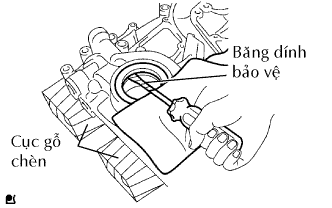
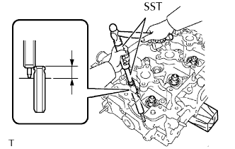

ĐỘNG CƠ > THAY THẾ |
| 1. THAY THẾ PHỚT DẦU NẮP XÍCH CAM |
|  |
Dùng một tô vít có bọc băng dính ở đầu, nạy phớt dầu ra.
Đặt nắp xích cam lên các cục gỗ.
Dùng SST, đóng phớt dầu mới vào cho đến khi bề mặt của nó ngang bằng với mép của hộp bánh răng cam.
Bôi một lớp mỏng mỡ MP lên lợi của phớt dầu mới.
| 2. THAY THẾ PHỚT DẦU PHÍA SAU ĐỘNG CƠ |
 |
Đặt tấm hãm phớt dầu lên các cục gỗ.
Dùng một tô vít có bọc băng dính ở đầu và một búa, đóng phớt dầu ra.
Đặt tấm hãm phớt dầu lên các cục gỗ.
Dùng SST và búa, đóng phớt dầu mới vào cho đến khi bề mặt của nó bằng với mép của tấm chặn phớt dầu.
| 3. THAY THẾ BẠC DẪN HƯỚNG XUPÁP NẠP |
 |
Gia nhiệt nắp quy lát lên từ 80 đến 100°C (176 đến 212°F).
 |
Đặt nắp quy lát lên các cục gỗ.
Dùng SST và một búa, đóng bạc dẫn hướng ra.
Dùng đồng hồ so, đo đường kính lỗ lắp bạc dẫn hướng trên nắp quy lát.
Chọn bạc dẫn hướng mới (STD hoặc O/S 0.05).
| Đường kính lỗ bạc | Cỡ bạc |
| 10.285 đến 10.306 mm (0.4049 đến 0.4057 in.) | Dùng STD |
| 10.335 đến 10.356 mm (0.4069 đến 0.4077 in.) | Hãy dùng O/S 0.05 |
|
Gia nhiệt nắp quy lát lên từ 80 đến 100°C (176 đến 212°F).
Đặt nắp quy lát lên các cục gỗ.
Dùng SST và búa, đóng bạc dẫn hướng xupáp mới để đạt chiều cao nhô lên tiêu chuẩn.
Dùng mũi doa 5.5 mm, doa bạc dẫn hướng xupáp để đạt được khe hở tiêu chuẩn.
| 4. THAY THẾ BẠC DẪN HƯỚNG XUPÁP XẢ |
Gia nhiệt nắp quy lát lên từ 80 đến 100°C (176 đến 212°F).
Đặt nắp quy lát lên các cục gỗ.
Dùng SST và một búa, đóng bạc dẫn hướng ra.
Dùng đồng hồ so, đo đường kính lỗ lắp bạc dẫn hướng trên nắp quy lát.
Chọn bạc dẫn hướng mới (STD hoặc O/S 0.05).
| Đường kính lỗ bạc | Cỡ bạc |
| 10.285 đến 10.306 mm (0.4049 đến 0.4057 in.) | Dùng STD |
| 10.335 đến 10.356 mm (0.4069 đến 0.4077 in.) | Hãy dùng O/S 0.05 |
 |
Gia nhiệt nắp quy lát lên từ 80 đến 100°C (176 đến 212°F).
|  |
Đặt nắp quy lát lên các cục gỗ.
Dùng SST và búa, đóng bạc dẫn hướng xupáp mới để đạt chiều cao nhô lên tiêu chuẩn.
Dùng mũi doa 5.5 mm, doa bạc dẫn hướng xupáp để đạt được khe hở tiêu chuẩn.
| 5. THAY BẠC ĐẨU NHỎ THANH TRUYỀN |
Dùng SST và máy ép, ép bạc vào.
Gióng thẳng các lỗ dầu của bạc mới và thanh truyền.
Dùng SST và máy ép, ép bạc vào.
Dùng một máy mài lỗ chốt, doa bạc để đạt được khe hở tiêu chuẩn giữa bạc và chốt píttông.
Kiểm tra rằng chốt píttông lắp khít tại nhiệt độ bình thường.
Bôi dầu động cơ lên chốt píttông và ấn nó vào thanh truyền bằng ngón tay cái.